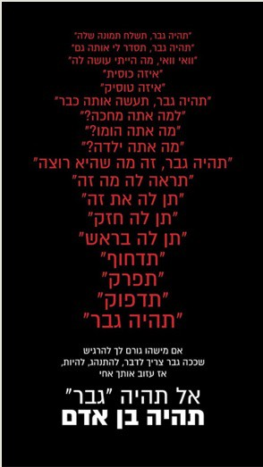
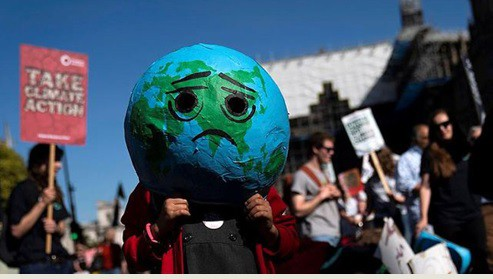

אקטיביזם חברתי
פעולה לשינוי חברתי
פעולה לשינוי חברתי. פעילות אזרחית שקוראת לשינוי חברתי.
העקרון הבסיסי בדמוקרטיה הוא שהשלטון שייך לאזרחים. אזרחים חשים לעיתים שהמצבה קיים אינו ראוי וצריך לעשות שינויים חברתיים.
מרבית האזרחים טרודים בשגרת יומם ומתקשים להתגייס להוביל שינוי (חלקם אולי גם לא מסכימים שצריך שינוי)
בכל חברה יש אנשים שהנושא "בוער בהם" והם נרתמים לקריאה לשינוי או עושים את השינוי בפועל - **אקטיביסטים**.
קמפיין שבו העלו ידוענים רבים את התמונה הזו יחד עם מסרים נגד אלימות מינית ופגיעה בנשים
הקשר בין קמפיין ידוענים לדיווח בתקשורת
הקישור לכתבה המקורית בנושא הקמפיין והדיווח עליו ב"ישראל היום".
מחאת בני נוער מכל העולם נגד התעלמות הממשלות
אקטיביזם דיגיטלי: שימוש ברשתות חברתיות ואתרים כדי לארגן הפגנה באותו היום ברחבי העולם בקריאה לאזרחים ולממשלות לבצע פעולות להפחתת הזיהום.
מחאה נגד אלימות משטרתית

תמונת מחאה חברתית

חשיבות התקשורת בגיוס אזרחים
בחברה המודרנית – חברה של המוני אזרחים – קשה לאדם אחד או קבוצה מצומצמת לעשות שינוי חברתי ולעיתים קרובות המטרה שלהם היא לעורר את ההמונים או את הממסד לבצע את השינוי וכאן חשיבות התקשורת:
- העלאת הנושא על **סדר היום הציבורי**.
- לגייס אזרחים נוספים שיתמכו בשינויים החברתיים.
- לקשור בין אזרחים – יתכן שכל אחד מרגיש צורך בשינוי, אבל חושב שרק הוא מרגיש כך. תקשורת יכולה להראות לאנשים ש"הם לא לבד".
- הפצת מידע מגורמים מוסמכים (מומחים) או מאזרחים שונים – יידוע האזרחים.
- גיוס האזרחים – ליום מסוים ומקום מסוים כדי להיפגש או כדי לפעול לשינוי.
גיוס קהלים בתרבות הדיגיטלית
כיום, בתרבות הדיגיטלית, יש שימוש ברשתות החברתיות כדי לגייס קהלים למען שינויים חברתיים ולעניין את התקשורת הממסדית בנושאים של אקטיביזם חברתי.
אקטיביזם חברתי אנשים קוראים לפעולה לשינויים חברתיים.
שאלות לתרגול
- הסבירו מהו **אקטיביזם חברתי** והציגו דוגמאות לדרכים שבהן אקטיביסטים משתמשים בתקשורת כדי להשיג את מטרתם.
- הסבירו את חשיבותן של **הרשתות החברתיות** בגיוס אזרחים לשינוי חברתי (התייחסו למחאת האקלים).